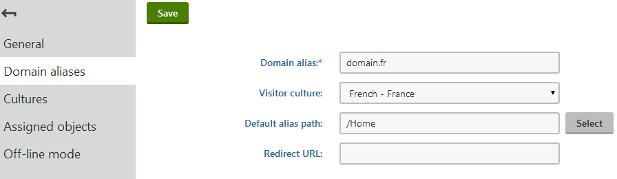
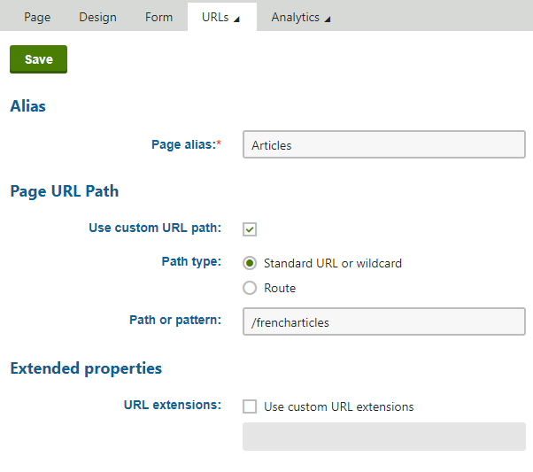

Configuring URLs for multilingual websites
On multilingual websites, all language versions of a page use the same URL by default. This URL is based on the given page's alias path. For example, the home page always has the following URL: /Home
If you want to see the same page in French, you need to change the culture by entering the URL with an appropriate query string parameter: /Home?lang=fr-fr
Once the language is selected, the system stores the preferred culture code in the visitor's browser using a cookie. This means that the given visitor automatically sees the French version when returning to /Home or another translated page, even without any parameters in the URL.
Providing language selectors for website visitors
Having to type a URL with a query string manually would be inconvenient for visitors. You can provide a more friendly way for users to switch between cultures using the Language data source web part.
Enforcing separate domains for languages
Having a different domain name for each culture is a good way to let visitors know that the particular version of the site is intended for a certain language audience. It is also the best option for multilingual websites with regard to Search engine optimization.
For example, if the English version of your site is available under domain.com, the French version could use domain.fr and so on. This scenario uses a different country‑code top‑level domain, but you can set any other domain name format, such as unique subdomains for each culture.
To implement domain separation based on languages:
Open the Sites application.
Edit (
 ) your site.
) your site.On the General tab, select your website's primary language in the Visitor culture field.
This assigns the given language to the site's main domain name.
Set up additional domain names for other languages as domain aliases on the Domain aliases tab.
Just like with the main domain, you can assign a language to each alias by selecting the matching culture in the Visitor culture field.
Configuration requirements
When setting up the Visitor culture of the site and its aliases, only assign each language to a single domain and do not use the (Automatic) value. Otherwise the system cannot determine with certainty which content culture to display.
Also make sure that your domain aliases do not use a Redirect URL leading to another domain name.

Creating a domain alias for a specific cultureOpen the Settings application.
Select the URLs and SEO category and enable the Force domain culture setting.
Click Save.
Note: You cannot use forced culture domains in combination with the language URL prefixes described in the next section.
The system now ensures the following:
The default content culture is selected based on the domain name through which the website is opened.
All page URLs (e.g. in navigation elements) are generated using the domain name to which the current content culture is assigned.
When a user selects a different language through one of the language selection web parts, the system redirects the URL to the corresponding domain name.
Authentication with multiple domains
The user context is not carried over when switching between domains on the live site. If you are using standard Forms authentication, registered users who change the content culture while browsing need to log in separately on each language version of the website.
If this is a problem, you can work around it by implementing a single sign-on mechanism for all domains.
Using language prefixes for URLs
If you do not own a different domain name for each language version of the website, but still want to ensure unique URLs for each culture without adding query string parameters, you can use language prefixes. Language prefixes insert a subdirectory into the URL in format <domain>/<language prefix>/<URL path>, for example: <domain>/fr-FR/Home
To enable language prefixes, go to Settings -> URLs and SEO, and enable the Use language prefix for URLs setting.
Note: You cannot use language prefixes if the Force domain culture setting is enabled.
Unless you check the Allow URLs without language prefixes setting, the system automatically redirects all URLs without a language prefix to a corresponding URL that includes a language prefix (according to the current content culture).
If language prefixes are enabled, the language selection web parts used on your site generate links containing the appropriate URL prefix by default. If you wish to configure a specific web part to use links with the standard query string parameter, disable the web part's Use culture specific URLs property. Please keep in mind that all other settings still apply, so the resulting URLs may be redirected.
Changing the language prefix text
By default, the language prefix matches the culture code of the requested language. If a culture alias is set for the language, it takes precedence and the system uses the alias instead of the culture code. If you want to change the language prefix for a certain language, the best way is to set a culture alias.
For example, to change the language prefix for the French language to France:
Open the Localization application.
Select the Cultures tab.
Type fr-fr into the Culture code filter and click Search.
Edit (
) the French - France culture.Set the Culture alias property to France.
Click Save.
The system now displays the language prefix in URLs of French page as for example: <domain>/France/Home
Setting page URL path for different culture versions
Forcing culture domains or using language prefixes for URLs ensures that you have a different URL for every page culture version. You can use the following approach if the features described above are disabled or if you want different culture versions of pages to have different names in the URL path.
For example, if you want the French Articles page to have a different URL than the English version:
Open the Pages application, and select the Articles page in the content tree.
Select the French language in the selector below the content tree.
Open the Properties -> URLs tab.
In the Page URL Path section, check Use custom URL path.
Leave the Standard URL or wildcard option selected as the Path type.
Set the Path or pattern value to: /frencharticles
Click Save.

Setting a custom URL path for a page's language version
To try out how the custom URL works, sign out and view the English version of the website. If you open the URL <domain>/frencharticles, the website automatically switches the culture to French and displays the French version of the Articles page.
The Language data source web part reflects the custom URL paths for culture versions of pages when generating links to the corresponding culture version.
You can also set Page aliases for pages dedicated to specific cultures. When the page is accessed through this type of alias, the system always opens it in the corresponding culture.
Note: You may encounter problems when using wildcards in URLs on multilingual sites. You can find more details and a possible solution on the Wildcard URLs page.
Generating URL path based on page name path
If you want to use automatically generated culture-specific URLs for different culture versions of pages, you must disable the Use custom URL path setting on the Properties -> URLs tab to let the system generate URLs based on the page name path.
For example, an English culture version of the Store page can be located at the <domain>/Store URL while its French culture version can be named Boutique and located at the <domain>/Boutique URL.
To enable using page name paths for URL paths:
Open the Settings application.
Select the URLs and SEO category and enable the Use name path for URL path setting.
Click Save.
Note: The Use name path for URL path system setting indicates whether the Use custom URL path page setting is enabled for newly created pages. URL properties of pages created prior to enabling the system setting are not changed.
If you need to disable the Use custom URL path page setting for existing pages, you can do so manually via the Kentico API.
To prevent possible URL collisions, you can combine this approach with using different domain names for each culture.